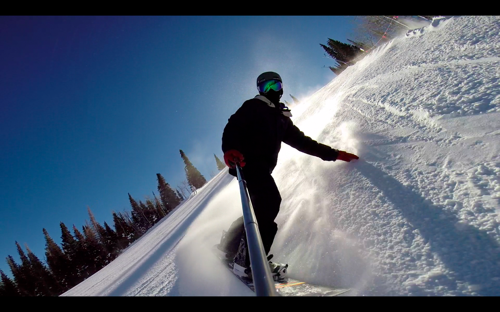
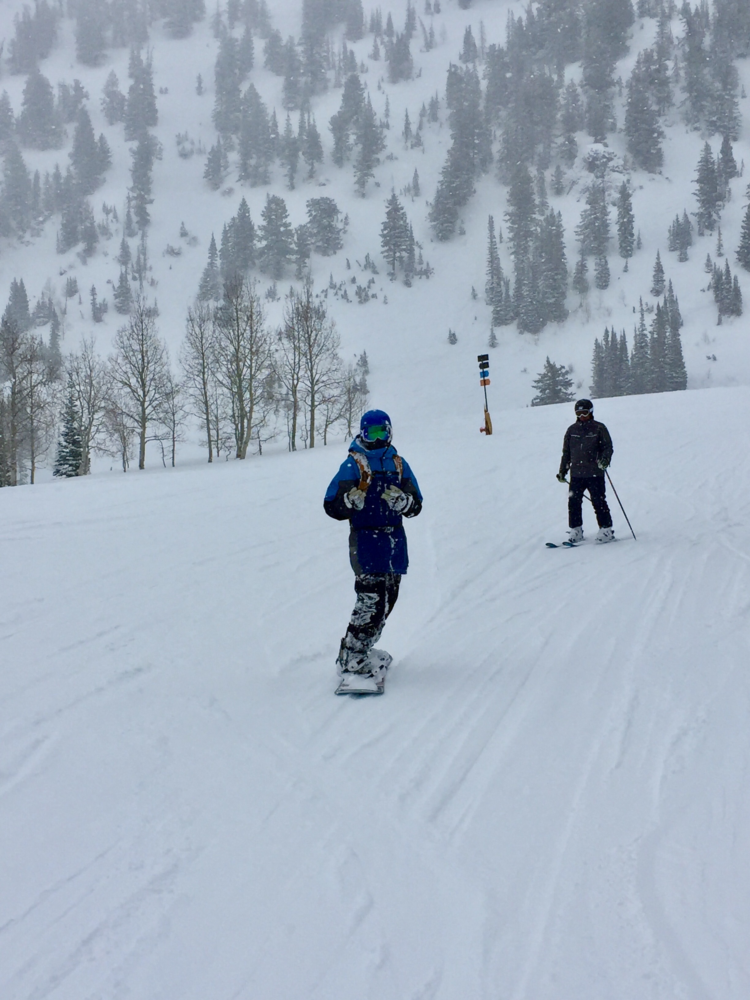
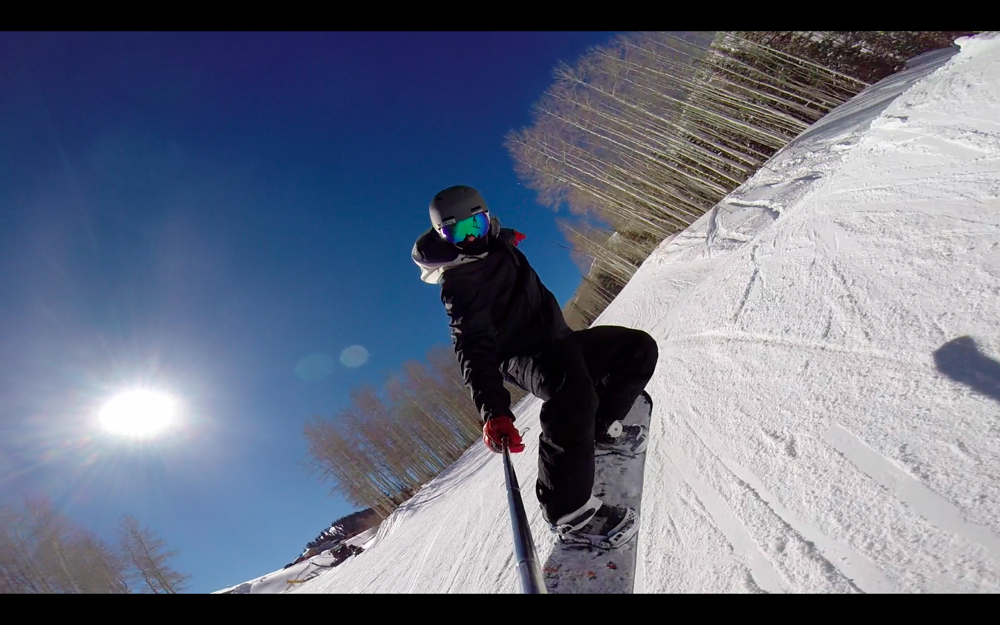
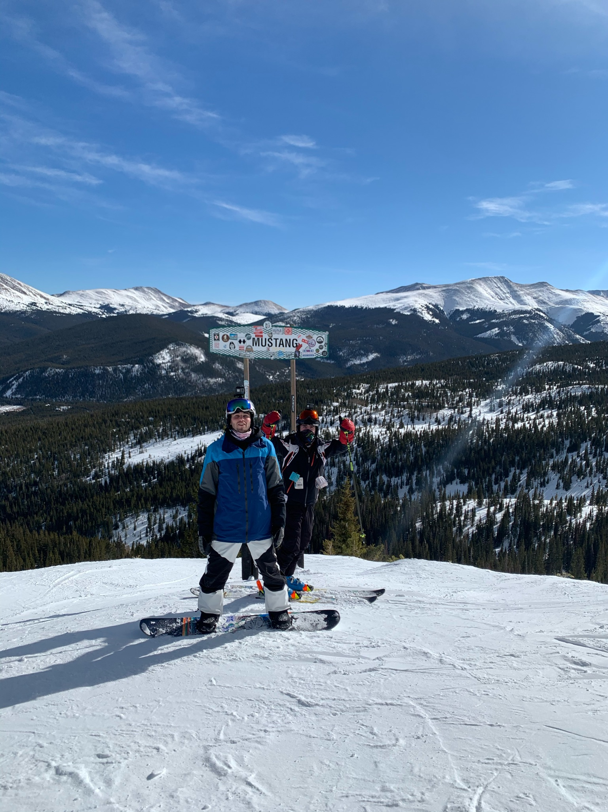
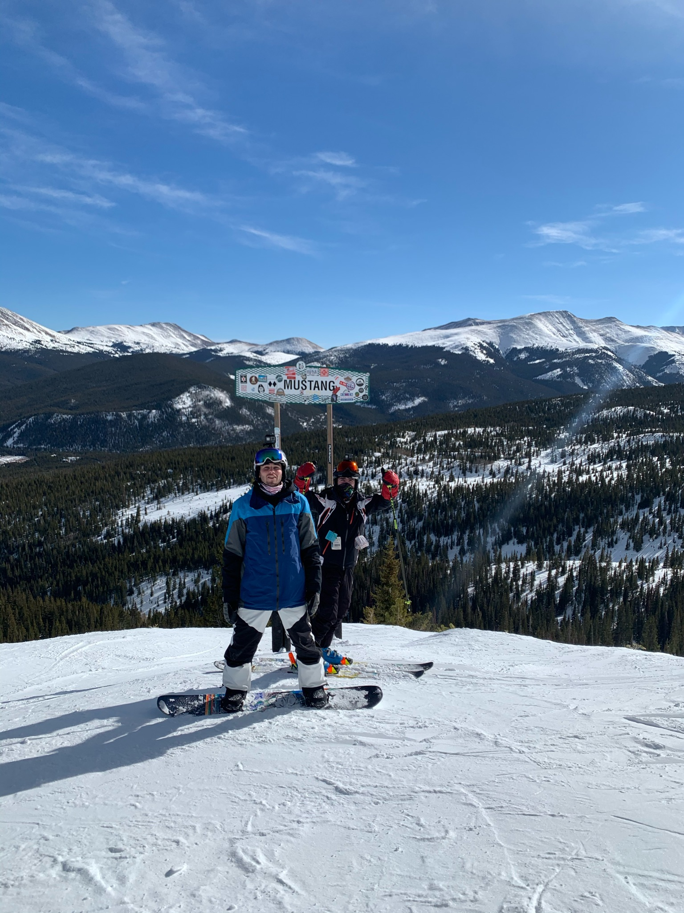

Equipment
The equipment that you use is very important to every snowboarder and in a way becomes part of their winter identity. During high school I worked at a local ski shop where I was able to learn about all different types of snowboards, boots, bindings, and how to find the perfect fit for each person. A rider’s snowboard is very special to them because the rider and the board develop a connection that strengthens throughout use. Picking the right board to use is important because different boards are made for different style of snowboarders, and it can either hinder or improve your skills. Throughout this page I will review the snowboards that I have used.


Whenever I go on ski trips, I love to bring my GoPro along with me. As seen in the video on the About Me! page, I love to create short ski movies with my friends and family. My GoPro is a must have when I go snowboarding so I can capture memories that last a lifetime. It is crucial that I have equipment that I can trust. Riding through deep powder and falling hard can easily break your equipment or cause something to fall from your pocket. This is why I carry my GoPro so I can use it to capture the amazing pictures seen throughout this blog!
Since I started snowboarding, I have owned 3 different boards. My first board was a 2008/2009 Burton Custom Smalls snowboard, and it was passed down to me by a friend. While I didn’t understand at the time the different types of snowboards, this kids beginner snowboard was perfect for me while learning how to ride. I have a great appreciation for this snowboard since it had been with me through many falls and many snowboarding lessons. It taught me the basics and I couldn’t have asked for more. When I grew out of this board, I used rental snowboards until I turned 16. Since the snowboard size depends on weight and height, it was much easier to rent and change boards each season. The quality and shape of rental boards are not comparable to one you own, and it made getting a new snowboard even better.

In 2017 after working at the ski shop for a year, I did my research and decided to buy a 2017 Lib Tech Travis Rice Pro snowboard that I still currently use. My coworkers were shocked to find out I bought an expert level snowboard without any hesitation. My skills were doubted, and I soon showed them what I was capable of. This board has handled my aggressive riding and the expert terrain I’ve encountered for the past 4 years without any distrust. The board features a specially designed edge, called magnatraction, to handle well on icy terrain and I can confidently say it works wonders. I have been developing a deep understanding of the snowboard and its capabilities since the first time I rode it. I have taken this snowboard all over the United States, to multiple ski resorts in Canada, and across the Atlantic Sea to Austria and Switzerland.
In 2018, I bought my 3rd snowboard (second new board). I bought a 2018/2019 Capita Ultrafear which was geared toward “park” style riding that I began taking an interest in. This snowboard was perfect for riding on the east coast in less difficult terrain when I went to local mountains with friends. It is a terrain park oriented featuring a mid-flex and a flat shape, meaning it is not as aggressive and is more playful than my Lib Tech board. While I don’t get to ride this snowboard very often, I enjoy messing around on it and practicing jumps and rails in the terrain park. Instead of being a board for difficult terrain, this lightweight snowboard has been perfect for my transition into learning ticks. I have been learning to trust this snowboard and understand how it interacts with snow and rails.
 

Leave a Comment: